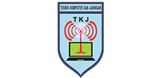
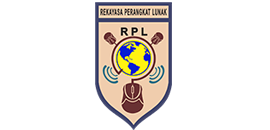
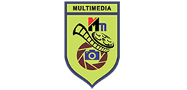
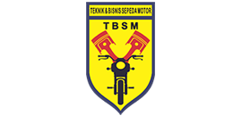
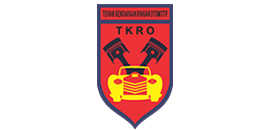
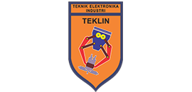

Teknik Komputer Jaringan
Merupakan salah satu Paket Keahlian yang didirikan dan dibuka pada tahun 2009 oleh Manajemen SMK YPC Tasikmalaya. Karena semakin berkembangnya Ilmu Pengetahuan dan Teknologi khususnya di bidang IT maka Paket Keahlian Teknik Komputer dan Jaringan SMK YPC ini didirikan sebagai Jurusan yang diharapkan mampu menembus dunia kerja dan industri yang sesuai dengan bidang keahlian TKJ.

Rekayasa Perangkat Lunak
RPL (Rekayasa Perangkat Lunak) merupakan salah satu jurusan yang ada di Sekolah Menengah Kejuruan (SMK). RPL mempelajari dan mendalami semua cara-cara pengembangan perangkat lunak termasuk pembuatan, pemeliharaan, manajemen organisasi pengembangan perangkat lunak, dan manajemen kualitas.

MULTIMEDIA
Multimedia adalah penggunaan komputer untuk menyajikan dan menggabungkan teks, suara, gambar, animasi, audio, dan video dengan alat bantu ( tool) dan tautan ( link) sehingga pengguna dapat melakukan navigasi, berinteraksi, berkarya, dan ber komunikasi. Multimedia sering digunakan dalam dunia informatika.

Teknik Bisnis Sepeda Motor
Teknik dan Bisnis Sepeda Motor (TBSM) adalah salah satu cabang ilmu teknik mesin yang mempelajari tentang bagaimana merancang, membuat dan mengembangkan alat-alat transportasi darat yang menggunakan mesin, terutama sepeda motor. Teknik dan Bisnis Sepeda Motor (TBSM) menggabungkan elemen-elemen pengetahuan mekanika, listrik, elektronik, keselamatan dan lingkungan serta matematika, fisika, kimia, ipa dan manajemen.

Teknik Kendaraan Ringan Otomotif
Teknik Kendaraan Ringan Otomotif adalah sebuah ilmu yang mempelajari kompetisi keahlian bidang teknik otomotif yang menekankan pada bidang jasa perbaikan kendaraan ringan (mobil). Tujuan kompetensi keahlian Teknik Kendaraan Ringan Otomotif adalah untuk membekali peserta didik dengan keterampilan, pengetahuan, dan sikap pada dunia otomotif. Jadi, para pembaca sekalian sekarang sudah pada tau apa itu Jurusan TKRO.
.png)
Desain Pemodelan dan Informasi Bangunan
Desain Pemodelan & Informasi Bangunan atau yang tadinya bernama Teknik Gambar Bangunan adalah jurusan yang mempelajari tentang perencanaan bangunan, pelaksanaan pembuatan gedung dan perbaikan gedung. kegiatannya adalah belajar menggambar rumah, gedung dan apartemen, menghitung biaya bangunan, melaksankan pembangunan dan memelihara kontruksi bangunan.

Teknik Elektronika Industri
Teknik elekronika industri adalah bidang teknik yang mempelajari tentang komponen listrik, berbagai macam semikonduktor. Teknik elektronika masuk dalam golongan teknik listrik atau elektro yang menggunakan arus kecil.